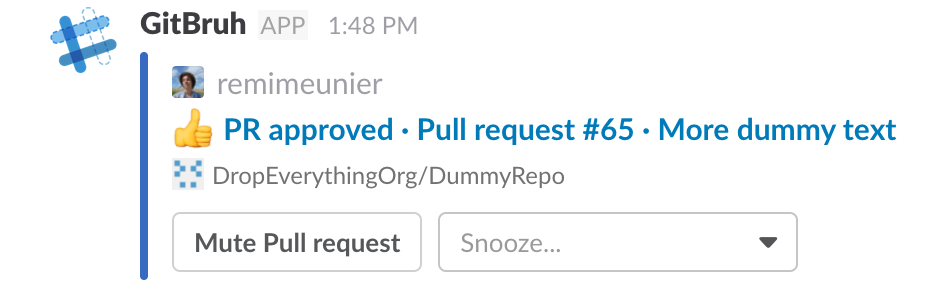

This section explains how to get GitBruh up and running.
Install GitBruh
Click on the button Add to Slack in the homepage. You will be redirected to Slack
authorization page. Choose the team to which you want to add GitBruh. Then, you will be redirected
to GitHub authorization page.
If everything went well, you will receive a welcome message with information on
getting more familiar with GitBruh.
Watch a GitHub repository
To start receiving messages for a given repository, you first need to tell GitBruh. Use the
Slack command /watchrepos username/repo-name. Make sure you are
on the team on which you added GitBruh.
A new GitHub webhook pointing to GitBruh is added to the repository you supplied. Learn
more about /watchrepos.
And that's it ! You should start receiving GitHub activity messages
related to the newly watched repo from gitbruh Slack bot.
Slack commands
GitBruh comes with a set of slack commands
to interact with users. These commands can be executed from any channel of
a team where GitBruh is installed. All these commands are described in this section.
Note:
Don't forget to prepend a slash "/" before the command name.
/watchrepos
Example : /watchrepos john/awesome-stuff john/another-stuff
Watch GitHub repositories by GitBruh.
You can specify one or multiple repos separated by a whitespace. When a repository is
successfully watched by a user, he will start receiving messages related to this repo. A repo can be unwatched by issuing
/unwatchrepos.
Under the hood, two things are happening here (for each repo):
GitBruh registers the repo as being watched by you.
GitBruh adds a GitHub webhook to the repo.
To receive messages related to the repo, the steps above must be
successful. If not, the response from /watchrepos will contain additional
information on further actions to take to properly set up the repo.
Response
The response contains at most three sections :
Green : The repos listed in this section have been successfully watched by
GitBruh and a webhook is set on each repo (previous steps succeded both).
Orange : The repos listed has been registered by GitBruh as being watched by you
(step 1 succeeded) but the webhook couldn't be added because you don't have enough
permissions. The webhook has to be added by an owner by issuing /watchrepos
or manually. After adding
the webhook, you don't need to re-issue /watchrepos.
Red : GitBruh couldn't watch the repos or add a
webhook because it couldn't find them (both steps failed). This usually means that
you mistyped the repo name or you didn't authorize GitBruh to access organization
repos. After granting access, you will need to re-issue /watchrepos.
When no repos are supplied to the command, GitBruh will send an error message specifying
the error details.
/unwatchrepos
Example : /unwatchrepos john/awesome-stuff john/another-stuff
Stop watching GitHub repositories by GitBruh.
You can specify one or multiple repos separated by a whitespace. When a repository is
unwatched, the user will stop receiving messages related to this repo. After issuing this
command, GitBruh will respond with a message with at most two sections(defined by the
outcomes below). Each section regroups the repos that meet its description. To watch again
/watchrepos.
Note: Webhooks must be deleted
manually. Webhooks associated with unwatched repos are not deleted automatically
because other users may still be watching these repos. Make sure it is not the case
before deleting any webhook.
Response
After issuing /unwatchrepos, GitBruh will respond with a messages containing
at most two sections :
Green : The repo has been unwatched. You will no longer receive messages related to
it.
Red : The repo has not been found. This usually means
it is a mistyping error or that the repo is not currently being watched by you.
When no repos are supplied to the command, GitBruh will send an error message specifying
the error details.
Messages are the bread and butter of GitBruh. Their function is to notify the
user via Slack about his activity on GitHub using GitHub webhooks. Messages are posted in the
Slack private channel (DM)
between the user and the GitBruh bot. You will find in
this section a full description of every message sent by GitBruh and how a user can interact with them.
Messages definition
New mention
This message is received when the recipient is tagged in an issue description or an
issue or pull request comment.

Review submitted
Messages sent when a review is submitted to one of your pull requests. The format will
depend on the status of the review.
Learn more about GitHub reviews.
Comments
Approved

Changes requested
Review requested
This message is received when someone sets the recipient as reviewer for a GitHub pull
request.
Message interactions
GitBruh leverages a cool feature of Slack API called interactive messages.
Broadly, it allows a user to trigger one or multiple actions after receiving a Slack message
containing elements for interacting with it (buttons, menus). GitBruh uses this API
to allow users to interact with GitBruh messages in Slack by muting/unmuting issues or pull
requests, or snoozing messages.
Mute
By clicking on the Mute Issue button, the user won't receive any
further messages related to the issue. Clicking again will unmute the issue.
Unmute
By clicking on the Unmute button, the user will again receive messages related to
the issue. Clicking again will mute the issue.
Snooze
A user can snooze a message to be able to act upon it at a more convenient moment. By
clicking on the Snooze... button, a menu will show with two options (1 hour or
tomorrow). The message will then be delivered at the chosen moment.
Note:
The snoozed version of the message received contains the time at which the original
message has been sent.
Note:
The snoozed version of the message received doesn't have a mute button. You can only
mute from the original message. It is so to keep consistency with the muting status of
the issue shown on the button (Mute Issue = issue not muted / Unmute = issue muted),
as it would be required to update the Mute/Unmute buttons of all snoozed versions to
reflect the status of the issue.
To be able to receive events from GitHub for a specific repo, GitBruh needs a webhook
to be set up on the repo. Once the webhook set, GitBruh will start receiving events from
GitHub for a specific set of actions undertaken by any collaborator on the repository.
Add a webhook manually
To add a GitHub webhook manually, follow these instructions. Use
these parameters :
Payload URL :
https://api.gitbruh.bachirc.me/api/github/webhook
Content type : application/json
Which events would you like to trigger this webhook? : Let me
select individual events.
Select Issue comment, Issues, Pull request and Pull
request review and make sure Push is not selected
Check Active box
Click Add webhook